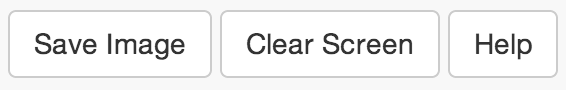

How to use the app
Using the Menu

The app will open with the "Draw" button active. In this mode, you can draw the states and transitions for your DFA. To do this, simply draw a circle on the screen to create a state. What if you're no artist, you ask? Don't worry, we are here to help. The app will automatically adjust it to look like an actual circle. When you draw a transition, from one state to the next, you will be prompted to enter the transition labels. To edit the label after creating the transition, redraw the transition and you will be prompted again, at which point you can edit or remove labels. If you'd like to draw a transition to and from the same state, draw a straight line from one end of the circle to the other. This will create a label in the middle of the state with the transition name you gave it.
The first state you draw will be assigned as the initial, or start, state. To change which state is the initial state, use the "Mark Initial" button and click on the state you wish to make the initial state. Initial states are marked with an arrow.
The "Toggle Accepting" button will change any clicked state from accepting to non-accepting. Accepting states are marked green.
You can move states using the "Move" button. After you select it, simply click on the state, and it, along with any transitions its connected to, will move to wherever you drag. Pretty convenient, huh?
The "Delete" buton will remove states and transitions.
To rename states, click the "Rename" button, followed by the state in which you'd like to rename. You will then be prompted to enter this new name, and it will be changed.
Using the Buttons
These are pretty self explanatory. The "Save Image" button will open a new window with your DFA as an image, which you can then save to your computer.
"Clear Screen" will bring up a confirmation window asking if you'd really like to clear the screen. Click yes if you are sure. If you're not sure, go ahead and click cancel and take some time to think about it. The button will still be there when you've made your decision.
The "Help" button brought you to this page, so we're going to assume you know what that does.